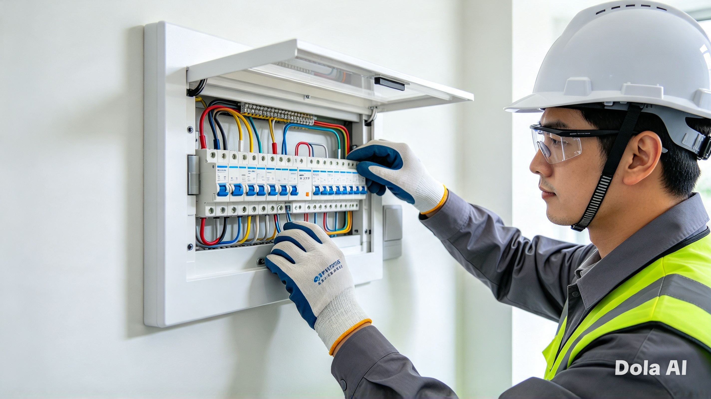
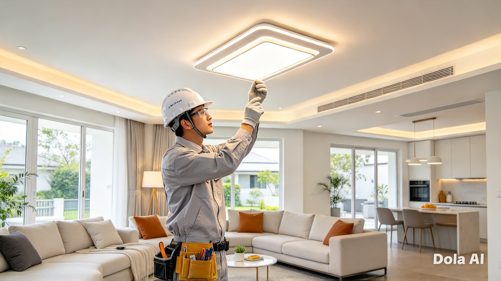
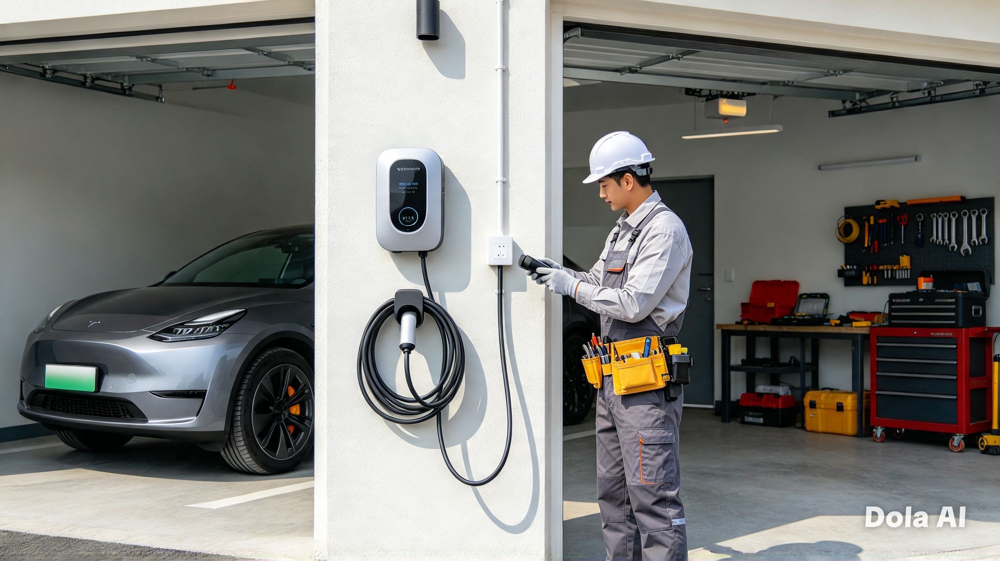

Voltline serviços elétricos
Energia segura para casa e negócio
Instalações, manutenção, reformas e diagnósticos para residências, condomínios e pequenos comércios. Atendimento organizado, com explicação clara e planejamento realista.
Soluções elétricas
com planejamento e clareza
Atuamos com serviços essenciais para manter a instalação segura, funcional e bem adaptada ao uso diário da casa ou do negócio.
Trabalhamos com devida atenção
e profissionalidade
O atendimento é pensado para facilitar a vida do cliente: objetivo, organizado e focado na solução real do problema.
Diagnóstico honesto
Identificamos o que está acontecendo antes de propor qualquer ação.
Planejamento simples
Você entende o escopo, o que será feito e quais as próximas etapas.
Execução cuidadosa
Priorizamos segurança, organização e qualidade no acabamento final.
Atendimento direto
Resposta clara para clientes que precisam de agilidade e bom entendimento.
Por onde
começar?
Escolha a opção mais parecida com o problema. Este guia é apenas orientativo e ajuda você a entender o próximo passo com mais clareza.
! Se houver cheiro forte de queimado, faíscas ou risco imediato, afaste-se do local e procure ajuda especializada.
Seu próximo passo aparecerá aqui
Escolha uma opção acima para ver orientações gerais.
Projetos em destaque
Trabalhos que entregam mais segurança e organização

Reorganização completa do painel principal
Ampliação de capacidade e organização interna para reduzir riscos, melhorar a distribuição e tornar o sistema mais confiável no uso diário.

Iluminação funcional e elegante
Layout pensado para valorizar o ambiente e melhorar conforto visual sem comprometer a eficiência da instalação.

Instalação para veículos elétricos
Solucionamos o ponto de recarga com infraestrutura adequada, segurança no circuito e melhor experiência de uso para a rotina.
Perguntas frequentes
Como solicitar um orçamento?
É simples: descreva a necessidade, o tipo de imóvel e o que você precisa resolver. Com essas informações, a avaliação inicial fica mais clara.
Vocês atendem residência e comércio?
Sim. A estrutura da Voltline é pensada para atendimento residencial e comercial, com foco em instalações, manutenção e ajustes que exigem organização e segurança.
O que precisa ser informado antes do serviço?
É útil saber se o problema é recorrente, se há pontos afetados, se o imóvel é antigo ou reformado e se há risco imediato de curto-circuito, superaquecimento ou interrupção total.
Qual é a melhor forma de contato?
Para agilidade, o WhatsApp é uma opção prática. Se preferir, também é possível entrar em contato por telefone ou e-mail para marcar uma conversa inicial.
Vamos
conversar!
Descreva o que precisa, compartilhe a situação do imóvel e um próximo passo pode ser definido com mais clareza.